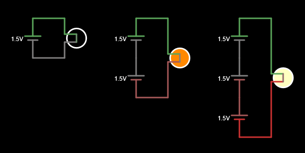

2. Serial connection¶
Two components are in series if they are connected behind each other in the same branch of a circuit.
The serial connection has the property of adding the voltage of the generators and distributing the tension between the receptors. When it is removed (or spoils) one of the elements of a serial connection, the current stops circulating and the circuit goes out.
Serial generators¶
Series generators add their tensions to get larger tensions. Most electric batteries have a voltage less than 4 volts, so that they come together in series to get larger tensions.
For example, the traditional battery of a gasoline car has 6 lead batteries of 2 volts each, thus achieving the 12 total volts typical of these batteries.
The batteries that form the battery of an electric car have 3.6 volts each and are placed in series to get hundreds of volts, necessary to move the electric motor.
Simulates the following circuits with series generators in the online simulator to see how the sum of tensions to the lamp affects:

The more batteries we place in series, the more tension the circuit has and the lar lamp is turned on.
Note
To ensure that the batteries have only 1.5 volts (the typical tension of an alkaline battery), it is necessary to click double on the battery or click with the right mouse button on the battery and choose Edit:

In the voltage dialog box we will change the value to 1.5 and end up clicking on the OK button.
Series receptors¶
The series receptors distribute the total generator tension so that the more elements are placed in series, the less voltage each will have.
Simulates in the online simulator the following circuits with series lamps to see how it affects the tension of each lamp:

When the circuit has only one lamp, it receives all the generator tension and therefore looks to the fullest.
When the circuit has two lamps in series, each receives half of the generator's tension, so they light up less.
Finally, when the circuit has three lamps in series, each receives a third of the generator's tension, so they barely light up.
If we now drag one of the lamps in series to remove it from the circuit, we can see how the entire circuit stops working.For a series circuit to work, all its elements must allow the passage of the current:

Series switches¶
The switches serve to control the current passage through the receptors. For that reason, the switches are always connected in series with the receivers you want to control. Being series, when the switch is open, it will not pass the receiver either by the receiver and when the switch is closed it will also pass the receiver.
When we want to control a lamp from two different points, the connection is a bit different from the series and the following circuit must be used.
Simulates the following circuits with switches in the online simulator with switches and with a series switch (it must be clicking S Capital to draw the switch):

By pressing the series switch, the lamp will light.
In the right circuit the lamp will be illuminated provided that the two switches are placed in the same direction. This is the typical circuit that is used to light the lamp of a hall from two different positions.
Exercises¶
What is a serial connection and what properties do you have?
Draw a circuit with series generators. What happens to the circuit when the generators are in series?
Draw a circuit with serial receptors. What happens to the circuit when the receptors are in series?
Why do the switches always connect in series with the receivers that we want to control?
What would happen if we connect three batteries of 6 volts in series with three lamps in series? How much do you think they would light?
Simulates the circuit in the online circuit simulator to check it.